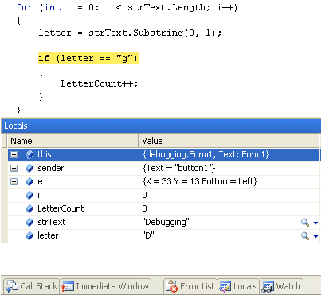
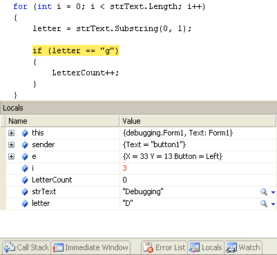

The Locals Window in C# .NET
<< Continues from the previous lesson
The Locals Window keeps track of what is in local variables (variables you've set up in this chunk of code, and not outside it).
Add a new breakpoint, this time in the margins to the left of your IF statement. Run your programme again, and click the button. When you see the yellow highlighted line, click the Debug menu at the top of C#. From the Debug menu, click Windows > Locals. You should see the following window appear at the bottom of your screen:

Keep pressing F10 and the values will change. Here's what is inside of the variables after a few spins round the loop:

The variable i is now 3; letter is still "D", and LetterCount is still 0. Keep pressing F10 and go round the loop a few times. What do you notice? Keep your eye on what changes in your Locals window. The changes should turn red.
You should notice that the value in i changes but letter never moves on. It is "D" all the time. And that's why LetterCount never gets beyond 0. But why does it never move on?
Exercise I
Why does LetterCount never gets beyond 0? Correct the code so that your
textbox displays the correct answer of 3 when the programme is run. HINT: think
Substring and loops!
In the next part, we'll take a look at another tool in you can add to your debugging armoury - Try ... Catch statement.